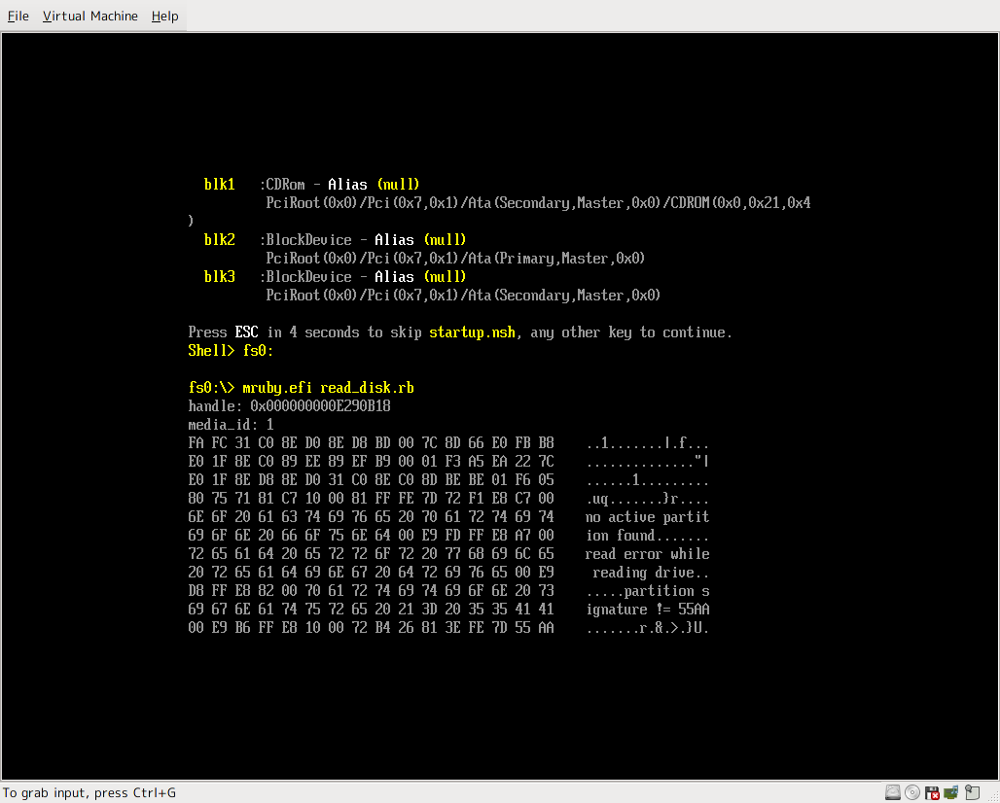

Overview
This is a mruby porting on EFI Shell.
- You can call UEFI functions via wrapper functions of BootService and RuntimeService.
- You can define any native C structure and you can access to the members via the structure.
How to use
- Download UEFI Shell from Tiano page.
- Put UEFI Shell binary in your USB memory as
EFI\BOOT\BOOTX64.efi. - Download mruby on EFI Shell from download page.
- Extract it and put it in your USB memory.
- You can run mruby script as follows:
> mruby.efi script.rb
Samples
Calling ResetSystem of Runtime Service
# Shutdown
# Currently, the name of constants are too long...
UEFI::RuntimeService.reset_system(UEFI::RuntimeService::ResetShutdown, UEFI::Status::SUCCESS)
Defining and calling UEFI native protocols
This is an example of reading disk via EFI_DISK_IO_PROTOCOL.
You can download entire source code from example/read_disk.rb.
# This is a part of the source code.
# Any native C structure can be defined.
class DiskIoProtocol < UEFI::Protocol
# DiskIoProtocol: http://wiki.phoenix.com/wiki/index.php/EFI_DISK_IO_PROTOCOL
GUID = UEFI::Guid.new("CE345171-BA0B-11d2-8e4F-00a0c969723b")
define_variable(:revision, :u64)
define_function(:read_disk, :efi_status, [:p, :u32, :u64, :u64, :p])
#...
end
# (snip)
# Now, `handle` contains the Handle of DiskIoProtocol,
# `media_id` contains ID of the disk.
puts "handle: #{handle}"
puts "media_id: #{media_id}"
# Find DiskIoProtocol via HandleProtocol.
ptr = UEFI::BootService.handle_protocol(handle, DiskIoProtocol::GUID)
dp = DiskIoProtocol.new(ptr)
buf = " " * 512 # Buffer to be filled with returned data.
st = dp.read_disk(ptr, media_id, 0, buf.size, buf)
if (st.success?)
print_binary_data(buf)
else
puts "ERROR: #{st}"
end
The result is as follows:

Reference
[T.B.D.]
License
Same as mruby, MIT License.